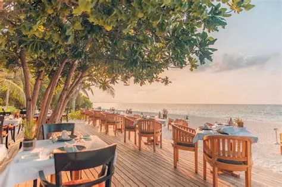

Local first
We buy from island fishermen and growers, and our menu changes with the catch.
Seanik began as a small beach grill and grew into the island's favourite place to share a meal.
Seanik opened in 2018 when chef Ibrahim Naseem set up a single grill on the beach and cooked whatever his cousins brought in from the boats. Neighbours came for the fish and stayed for the conversation.
Today we seat about 120 guests across the sand, a shaded deck and a quiet indoor room. The idea has not changed: honest cooking, local ingredients and plenty of time at the table.

Walk from the shore to your table in under a minute.
Three promises we keep at every service.
We buy from island fishermen and growers, and our menu changes with the catch.
Reef-safe fishing, no single-use plastic, and compost for our garden.
Every guest is treated like a neighbour, from first-timers to regulars.
Book for lunch, a sunset dinner, or a night under the stars.
Reserve a table